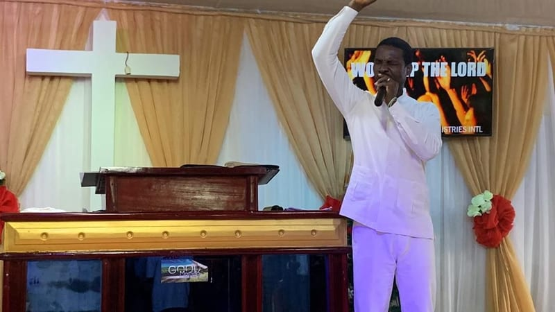
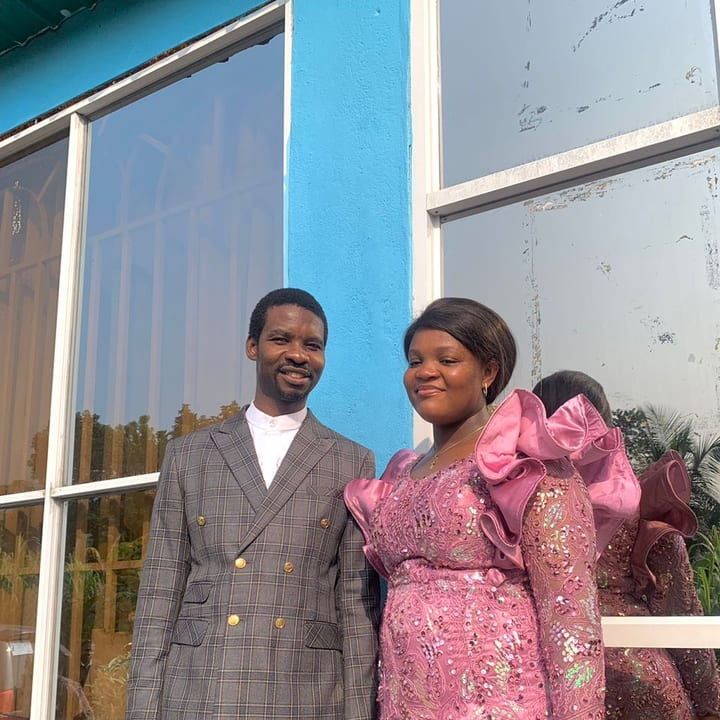

Servicio en Vivo
En Fuente de Vida Ministerio de Fuego Int'l creemos en el poder transformador de la presencia de Dios.
Somos una casa de adoración, restauración y avivamiento espiritual.
Aquí vidas son renovadas, corazones son encendidos y destinos son restaurados.
Levantamos una generación llena de fe, propósito y pasión por Cristo.
Este es un lugar donde la fuente de vida nunca deja de fluir.

Zona Horaria: GMT+1
1er Servicio: 8:00 am - 10:00 am
2do Servicio: 10:00 am - 12:00 pm
Zona Horaria: GMT+1
Cada Lunes: 5:00 pm - 6:30 pm
Zona Horaria: GMT+1
Cada Martes: 9:00 am
Zona Horaria: GMT+1
Cada Jueves: 5:00 pm - 6:30 pm
Zona Horaria: GMT+1
Cada Sábado: 3:00 pm
Nos encantaría conocerte, acompañarte y ayudarte a dar tus primeros pasos en esta familia de fe.
Soy nuevo aquíDescubre historias reales de sanación, restauración y milagros que Dios ha hecho en nuestra congregación.
Conoce los próximos programas y actividades de nuestra comunidad para unirte y crecer en la fe.
Localiza la sucursal más cercana y únete presencialmente a nuestros servicios, reuniones y actividades espirituales.